IO流
1. IO概述
回想之前写过的程序，数据都是在内存中，一旦程序运行结束，这些数据都没有了，等下次再想使用这些数据，可是已经没有了。那怎么办呢？能不能把运算完的数据都保存下来，下次程序启动的时候，再把这些数据读出来继续使用呢？其实要把数据持久化存储，就需要把内存中的数据存储到内存以外的其他持久化设备(硬盘、光盘、U盘等)上。
当需要把内存中的数据存储到持久化设备上这个动作称为输出（写）Output操作。
当把持久设备上的数据读取到内存中的这个动作称为输入（读）Input操作。
2. File类
File类为我们提供了操作文件和文件夹的方法。
2.1 File类的构造函数
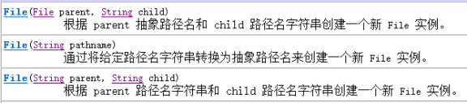
2.2 用File类获取文件相关信息
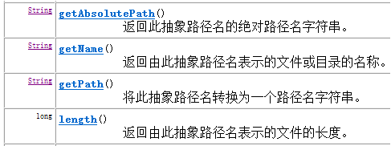
获取文件夹下的目录：
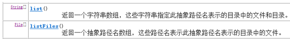
- 方法演示如下：
1 | public class FileMethodDemo { |
1，指定的目录必须是存在的，
2，指定的必须是目录。否则容易引发返回数组为null，出现NullPointerException
2.3 文件和文件夹的创建、删除、过滤**
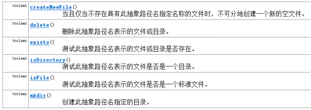
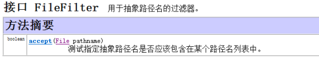
3. 字节流和字符流
- 字节流和字符流的区别：
- 以stream结尾的是字节流，以writer和reader结尾的是字符流；
- 字节流处理单元是一个字节，字符流处理单元是两个字节的Unicode字符，所以有中文的时候用字符流处理好一点；
- 字节流操作时本身不会用到缓冲区，直接操作文件，字符流操作的时候用到缓冲区；
- 字节流操作文件时不close文件也能输出，字符流不调用close方法时不会输出任何内容，可以使用flush方法强制刷新缓冲区，才能在不close的情况下输出内容；
- 平时用字节流比较多一点
3.1 字节流——FileOutputStream类**
OutputStream有很多子类，其中子类FileOutputStream可用来写入数据到文件。
FileOutputStream类，即文件输出流，是用于将数据写入 File的输出流。
- 构造方法
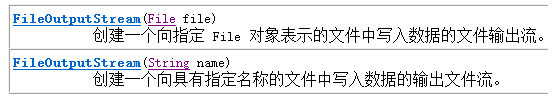
3.1.1 FileOutputStream类写入数据到文件中
l 将数据写到文件中，代码演示：
1 | public class FileOutputStreamDemo { |
3.1.2给文件中续写和换行**
我们直接new FileOutputStream(file)这样创建对象，写入数据，会覆盖原有的文件，那么我们想在原有的文件中续写内容怎么办呢？
继续查阅FileOutputStream的API。发现在FileOutputStream的构造函数中，可以接受一个boolean类型的值，如果值true，就会在文件末位继续添加。
- 构造方法
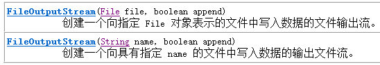
- 给文件中续写数据和换行，代码演示：
1 | public class FileOutputStreamDemo2 { |
3.2 字节流——FileInputStream类**
InputStream有很多子类，其中子类FileInputStream可用来读取文件内容。
FileInputStream 从文件系统中的某个文件中获得输入字节。
- 构造方法
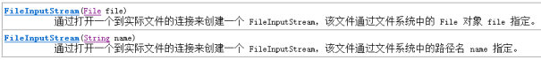
3.2.1 FileInputStream类读取数据read方法
在读取文件中的数据时，调用read方法，实现从文件中读取数据
- 从文件中读取数据，代码演示：
1 | public class FileInputStreamDemo { |
3.2.2 读取数据read(byte[])方法**
在读取文件中的数据时，调用read方法，每次只能读取一个，太麻烦了，于是我们可以定义数组作为临时的存储容器，这时可以调用重载的read方法，一次可以读取多个字符。
1 | public class FileInputStreamDemo2 { |
3.3使用字节流复制文件
虽然字节流本身没有缓冲区，但是为了提高效率，我们可以自行定义一个缓冲数组。
1 | public class CopyFileByBufferTest { |
3.4 字符流——FileReader类**
- 构造方法
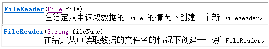
3.4.1 FileReader读取包含中文的文件
使用FileReader读取包含中文的文件
1
2
3
4
5
6
7
8
9
10
11
12
13
14
15
16
17
18
19
20
21
22
23
24
25
26
27
28
29
30
31
32
33
34
35
36
37
38
39
40
41
42
43
44
45
46
47
48
49public class CharStreamDemo {
public static void main(String[] args) throws IOException {
//给文件中写中文
writeCNText();
//读取文件中的中文
readCNText();
}
//读取中文
public static void readCNText() throws IOException {
FileReader fr = new FileReader("D:\temp\test.txt");
int ch = 0;
while((ch = fr.read())!=-1){
//输出的字符对应的编码值
System.out.println(ch);
//输出字符本身
System.out.println((char)ch);
}
}
//写中文（采用字节流）
public static void writeCNText() throws IOException {
FileOutputStream fos = new FileOutputStream("D:\temp\test.txt");
fos.write("我爱学习".getBytes());
fos.close();
}
}
3.5 字符流——FileWriter类
打开FileWriter的API介绍。用来写入字符文件的便捷类。此类的构造方法假定默认字符编码和默认字节缓冲区大小都是可接受的。
- 构造方法

3.5.1 FileWriter写入中文到文件中
- 写入字符到文件中，先进行流的刷新，再进行流的关闭。
1 | public class FileWriterDemo { |
3.5.2 flush()和close()的区别
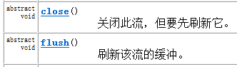
flush():将流中的缓冲区缓冲的数据刷新到目的地中，刷新后，流还可以继续使用。
close():关闭资源，但在关闭前会将缓冲区中的数据先刷新到目的地，否则丢失数据，然后在关闭流。流不可以使用。如果写入数据多，一定要一边写一边刷新，最后一次可以不刷新，由close完成刷新并关闭。
3.5.3 用字符流实现复制文本文件
1 | public class CopyTextFileTest { |
4. 转换流
4.1 OutputStreamWriter类
查阅OutputStreamWriter的API介绍，OutputStreamWriter 是字符流通向字节流的桥梁：可使用指定的字符编码表，将要写入流中的字符编码成字节。
- 代码演示：
1 | public static void writeCN() throws Exception { |
OutputStreamWriter流对象，它到底如何把字符转成字节输出的呢？
其实在OutputStreamWriter流中维护自己的缓冲区，当我们调用OutputStreamWriter对象的write方法时，会拿着字符到指定的码表中进行查询，把查到的字符编码值转成字节数存放到OutputStreamWriter缓冲区中。然后再调用刷新功能，或者关闭流，或者缓冲区存满后会把缓冲区中的字节数据使用字节流写到指定的文件中。
4.2 InputStreamReader类
查阅InputStreamReader的API介绍，InputStreamReader 是字节流通向字符流的桥梁：它使用指定的字符编码表读取字节并将其解码为字符。它使用的字符集可以由名称指定或显式给定，或者可以接受平台默认的字符集。
- 代码演示
1 | public class InputStreamReaderDemo { |
注意：在读取指定的编码的文件时，一定要指定编码格式，否则就会发生解码错误，而发生乱码现象。
5. 缓冲流
在我们学习字节流与字符流的时候，大家都进行过读取文件中数据的操作，读取数据量大的文件时，读取的速度会很慢，很影响我们程序的效率，那么，我想提高速度，怎么办？
Java中提高了一套缓冲流，它的存在，可提高IO流的读写速度
缓冲流，根据流的分类分类字节缓冲流与字符缓冲流。
5.1字节缓冲流**
字节缓冲流根据流的方向，共有2个
- 写入数据到流中，字节缓冲输出流 BufferedOutputStream
- 读取流中的数据，字节缓冲输入流 BufferedInputStream
它们的内部都包含了一个缓冲区，通过缓冲区读写，就可以提高了IO流的读写速度
5.2字节缓冲输出流BufferedOutputStream**
通过字节缓冲流，进行文件的读写操作 写数据到文件的操作
- 构造方法
public BufferedOutputStream(OutputStream out)创建一个新的缓冲输出流，以将数据写入指定的底层输出流。
1 | public class BufferedOutputStreamDemo01 { |
5.3字节缓冲输入流 BufferedInputStream**
刚刚我们学习了输出流实现了向文件中写数据的操作，那么，现在我们完成读取文件中数据的操作
- 构造方法
1 | public BufferedInputStream(InputStream in) |
5.4字符缓冲输出流 BufferedWriter**
将文本写入字符输出流，缓冲各个字符，从而提供单个字符、数组和字符串的高效写入。
- 方法：
1 | void newLine() 根据当前的系统，写入一个换行符 |
5.5字符缓冲输入流 BufferedReader**
从字符输入流中读取文本，缓冲各个字符，从而实现字符、数组和行的高效读取。
- 方法
public String readLine() 读取一个文本行，包含该行内容的字符串，不包含任何行终止符，如果已到达流末尾，则返回 null
1 | /* |
6. Properties类
Properties 类表示了一个持久的属性集。Properties 可保存在流中或从流中加载。属性列表中每个键及其对应值都是一个字符串。Properties集合，它是唯一一个能与IO流交互的集合。
方法：
1 | * public Object setProperty(String key, String value)调用 Hashtable 的方法 put。 |
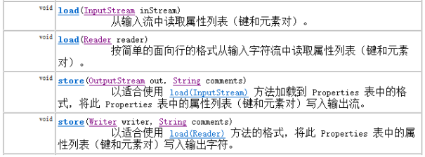
6.1将集合中内容存储到文件**
需求：使用Properties集合，完成把集合内容存储到IO流所对应文件中的操作
分析：
1，创建Properties集合
2，添加元素到集合
3，创建流
4，把集合中的数据存储到流所对应的文件中
stroe(Writer,comments)
store(OutputStream,commonts)
把集合中的数据，保存到指定的流所对应的文件中，参数commonts代表对描述信息
5，关闭流
代码演示：
1 | public class PropertiesDemo02 { |
6.2 读取文件中的数据，并保存到集合
需求：从属性集文件prop.properties 中取出数据，保存到集合中
分析：
1，创建集合
2，创建流对象
3,把流所对应文件中的数据 读取到集合中
load(InputStream) 把指定流所对应的文件中的数据，读取出来，保存到Propertie集合中
load(Reader)
4,关闭流
5,显示集合中的数据
代码演示：
1 | public class PropertiesDemo03 { |
注意：使用字符流FileReader就可以完成文件中的中文读取操作了
7. 序列化流和反序列化流
用于从流中读取对象的操作流 ObjectInputStream称为 反序列化流；
用于向流中写入对象的操作流 ObjectOutputStream称为 序列化流。
- 特点：用于操作对象。可以将对象写入到文件中，也可以从文件中读取对象。
7.1 对象序列化流ObjectOutputStream **
注意：只能将支持 java.io.Serializable 接口的对象写入流中
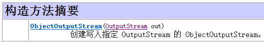
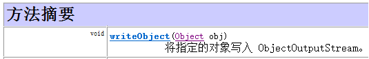
l 代码演示：
1 | public class ObjectStreamDemo { |
7.2对象反序列化流ObjectInputStream**
ObjectInputStream 对以前使用 ObjectOutputStream 写入的基本数据和对象进行反序列化。支持 java.io.Serializable接口的对象才能从流读取。
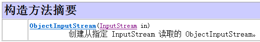
- 代码演示
1 | public class ObjectStreamDemo { |
7.3 序列化接口
当一个对象要能被序列化，这个对象所属的类必须实现Serializable接口。否则会发生异常NotSerializableException异常。
同时当反序列化对象时，如果对象所属的class文件在序列化之后进行的修改，那么进行反序列化也会发生异常InvalidClassException。发生这个异常的原因如下：
- 该类的序列版本号与从流中读取的类描述符的版本号不匹配
- 该类包含未知数据类型
- 该类没有可访问的无参数构造方法
Serializable标记接口。该接口给需要序列化的类，提供了一个序列版本号。serialVersionUID. 该版本号的目的在于验证序列化的对象和对应类是否版本匹配。
注意：对象中的静态变量不能序列化。
7.4瞬态关键字transient**
当一个类的对象需要被序列化时，某些属性不需要被序列化，这时不需要序列化的属性可以使用关键字transient修饰。只要被transient修饰了，序列化时这个属性就不会被序列化了。
同时静态修饰也不会被序列化，因为序列化是把对象数据进行持久化存储，而静态的属于类加载时的数据，不会被序列化。